搭建本博客过程以及遇到坑
搭建个人博客过程
1.安装node.js以及git
略
2.安装hexo-cli脚手架
1 | npm install -g hexo-cli |
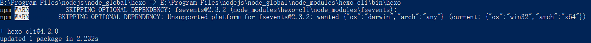
3.初始化博客项目
1 | //初始化hexo项目 |
报错无法识别”hexo”,网上查阅资料发现在安装node.js时，配置npm安装全局模块的路径与缓存路径，按照之前csdn上面的教程做，配置环境变量是错误的，这也是为什么之前项目跑不起来的原因，详见https://segmentfault.com/a/1190000023871608。
继续执行该命令，报错
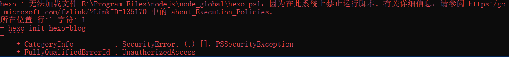
查阅资料，计算机上启动 Windows PowerShell 时，执行策略很可能是 Restricted（默认设置）。
查看计算机上的现用执行策略，打开PowerShell 然后输入 get-executionpolicy，表明是Restricted
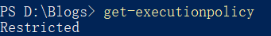
以管理员身份打开PowerShell 输入 set-executionpolicy remotesigned。
继续执行命令，报错
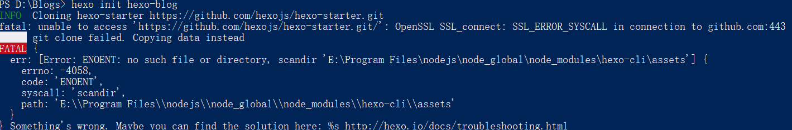
查阅资料发现是开VPN的问题，关掉VPN再执行命令
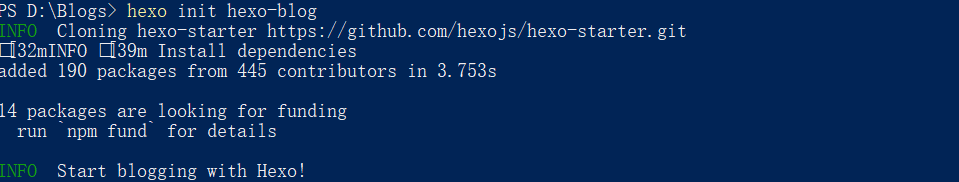
4.运行项目
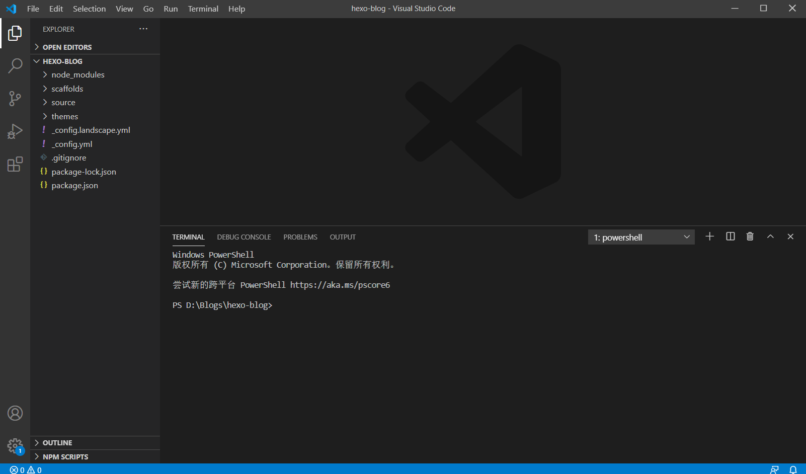1 | hexo server |
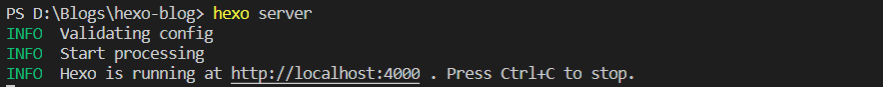
项目运行在本地4000端口，访问http://localhost:4000
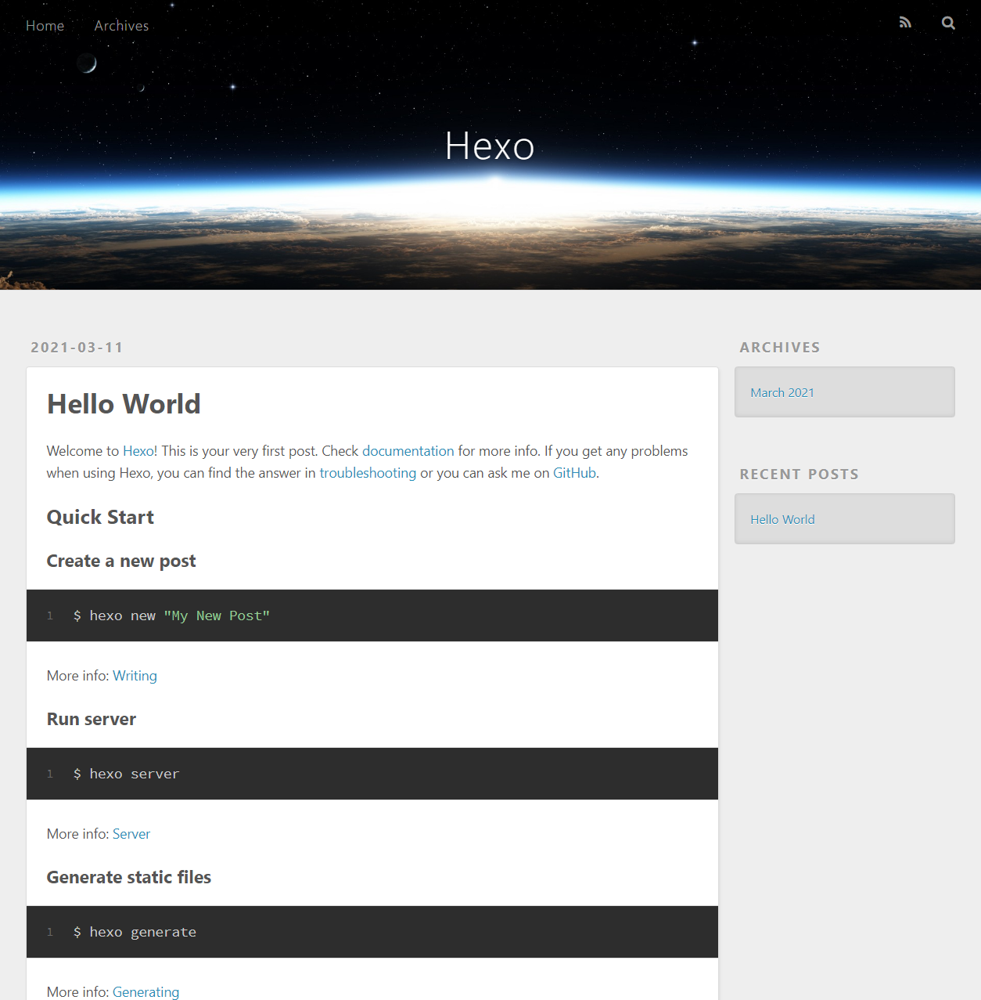项目结构：
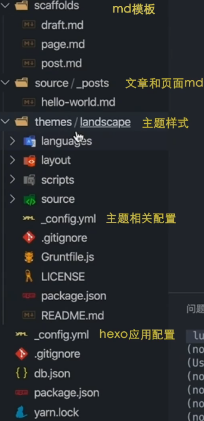
4.选择主题，并下载到项目
1 | git clone https://github.com/probberechts/hexo-theme-cactus.git themes/cactus |
挂了梯子，下载速度很慢
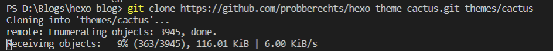
查阅资料，发现是挂了梯子，Git也要设置代理，详见：https://blog.csdn.net/isea533/article/details/84748009
梯子端口查看
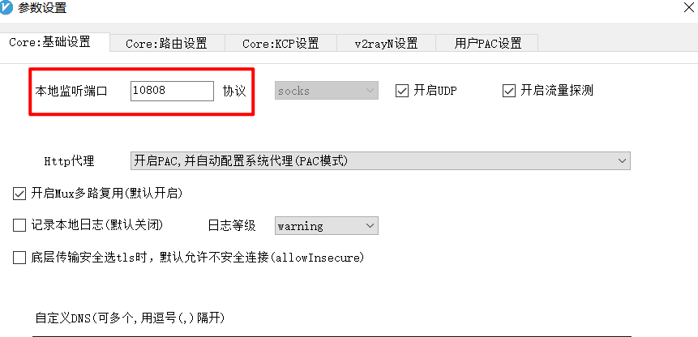
1 | git config --global http.https://github.com.proxy socks5://127.0.0.1:10808 |
重新clone
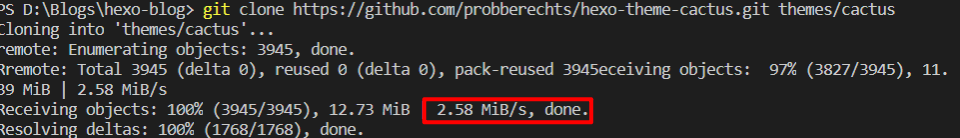
删除主题文件下.git文件，方便统一管理
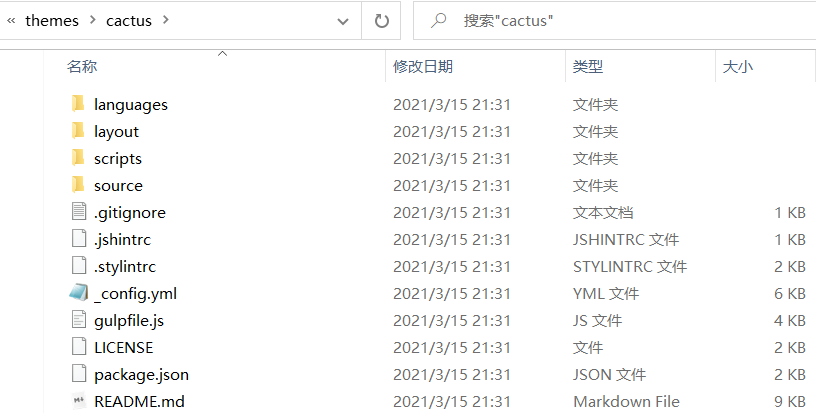5.修改hexo配置文件
打开根目录下config.yml文件，修改主题为：cactus
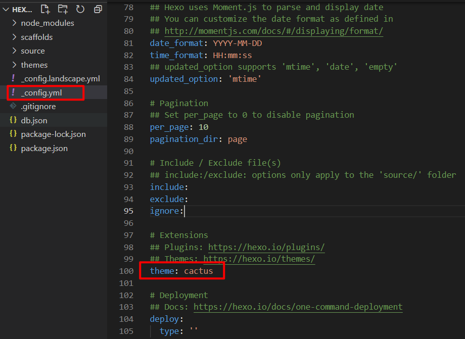
重启服务
1 | hexo server |

修改白色背景
在主题文件夹下找到config.yml文件，修改colorscheme属性为white
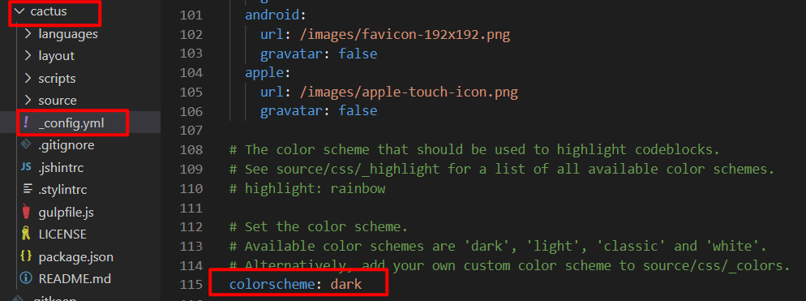
6.github新建仓库
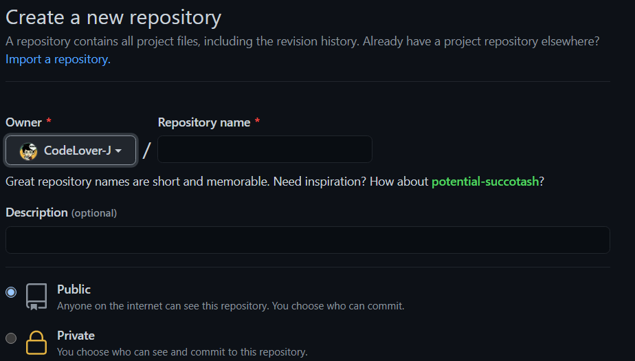
仓库名有两种方式：
1.[username].github.io
此种命名打包产物必须放在master分支上，访问路径为：https://[username].github.io
2.可以自定义仓库名
打包产物gh-pages分支，访问路径为：https://[username].github.io.[repo]
这里采用第一种方式
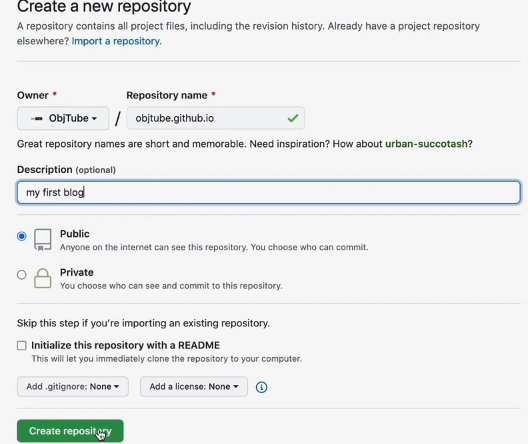
建好之后
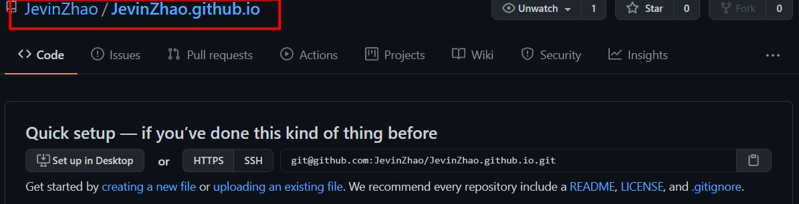
7.建本地仓库添加远程git地址
1 | //在博客项目根目录下初始化本地仓库 |
8.安装部署插件
作用：将生成好的代码部署到一个具体分支
1 | yarn add hexo-deployer-git |
报错
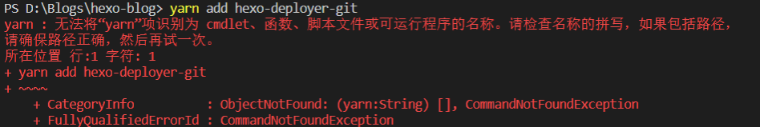
查阅资料，应该是没有安装yarn，那就使用npm吧
1 | npm install === yarn |
1 | npm install hexo-deployer-git --save |
修改博客项目根目录下config.yml文件
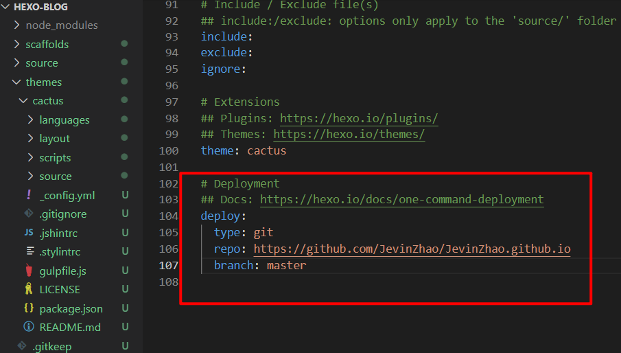
9.运行部署
1 | npm run deploy |
中间可能会让你登录github按提示操作即可
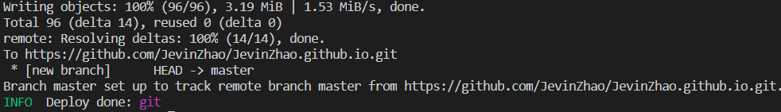
完成编译，并将产物public文件夹下的文件提交到github
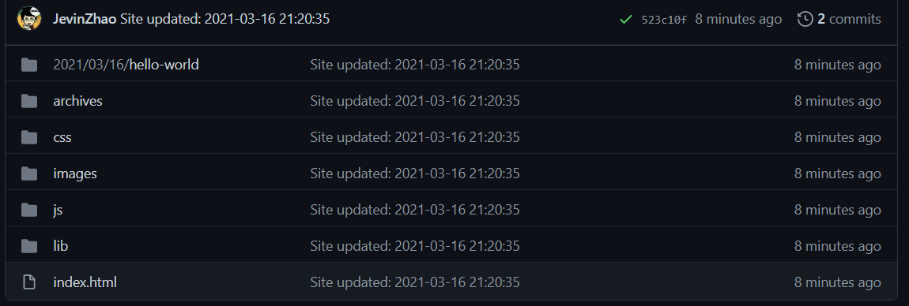
10.访问博客主页
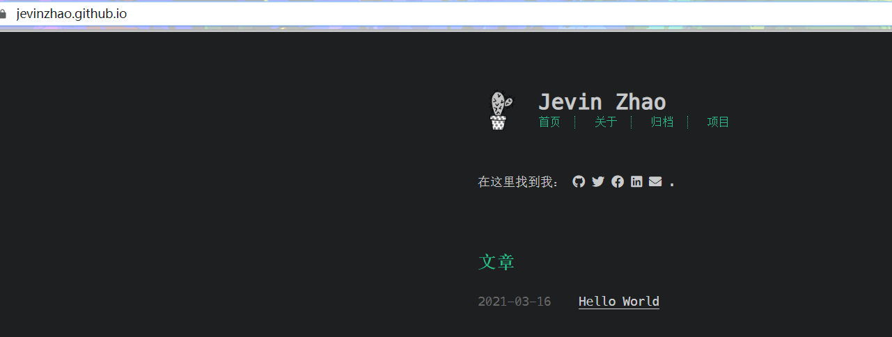
11.自动化部署
1 | //提交源代码到本地仓库 |
创建新分支
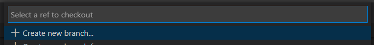
1 | //提交代码到github新分支上 |
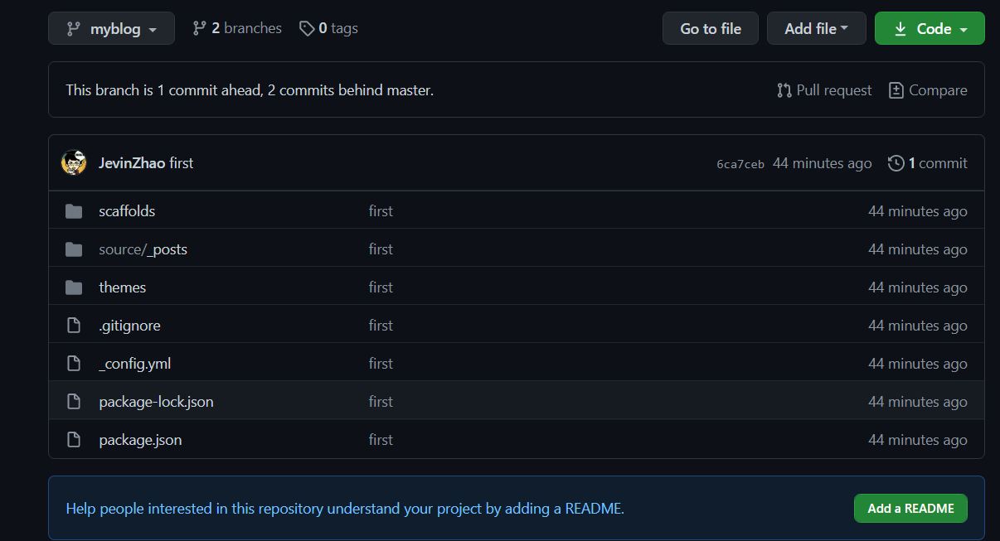
编写自动化部署脚本
在博客项目根目录下建立.github/workflows/deploy.yml文件
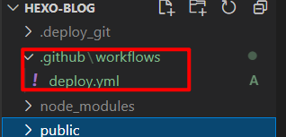
1 | name: Build and Deploy |
测试：
在源文件下修改博客内容，提交
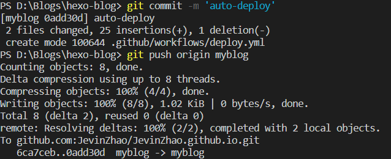
访问博客主页
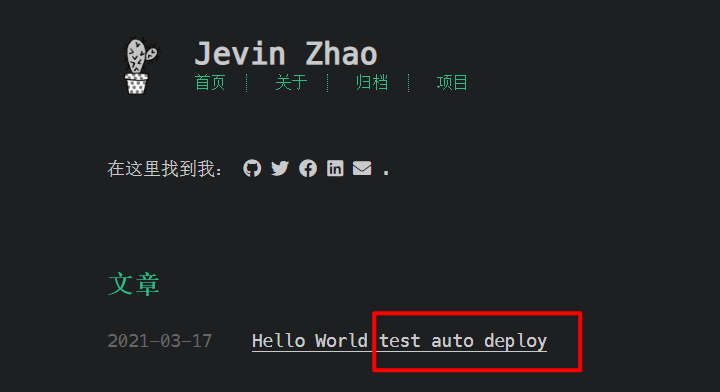
自动部署成功